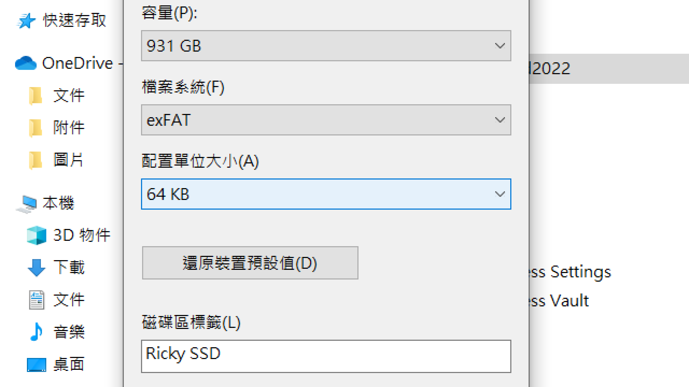
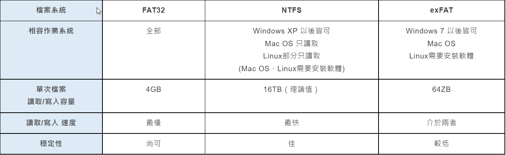

電腦小知識 <<
Previous Next >> 硬碟空間釋放教學
硬碟空間釋放原理
硬碟的儲存空間跟"配置單位大小"很有關聯
可以把"配置單位大小"想像成一個櫃子的大小
一個檔案就需要一個櫃子來裝
但是如果 檔案大小<櫃子儲存容量 那就會導致一個很小的檔案佔據了很大的空間
所以在格式化時可以盡量挑選最小的

----------------------------------------
檔案系統 盡量選擇 exFAT 或是 NTFS
這會攸關於檔案讀寫的上限
詳細的資料如下

電腦小知識 <<
Previous Next >> 硬碟空間釋放教學